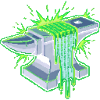

CODEFORGE
AI-powered code orchestration over git repos.
Forge code, not excuses.
INSTALL VIA GITHUB PACKAGES
docker pull ghcr.io/freema/codeforge:latest
SYSTEM_CAPABILITIES
High-density orchestration modules
SESSIONS
Stateful AI work units over git repos with multi-turn conversations. The AI maintains context across entire file trees.
PR REVIEWS
Automated pull request reviews via webhooks. Instant feedback on logic, security, and architectural debt.
WORKFLOWS
Multi-step pipelines composing sessions into complex scenarios. Automate entire migration paths with one command.
CI_ACTION
Run CodeForge as a GitHub Action or GitLab CI step. AI-powered code changes and PR reviews directly in your CI/CD pipeline — zero infrastructure needed.
WEB_UI
Full React dashboard to manage sessions, watch live AI output via SSE streaming, trigger reviews, and create PRs — all from your browser.
MULTI_CLI
Choose your AI backend per session — Claude Code or OpenAI Codex. Same orchestration, same security, different brain under the hood.
SECURITY_DOCTRINE
CodeForge is built for one purpose: running AI coding agents on your server in a hardened, isolated environment. No trust-the-prompt security. No "please don't do bad things" in the system message. Real, system-level enforcement.
ISOLATION_MATRIX
Every AI session runs in a sandboxed workspace. The agent physically cannot escape its boundaries — this isn't a prompt instruction, it's OS-level containment configured by you.
WORKSPACE_JAIL
Agent can only access its assigned workspace directory. No filesystem traversal, no reading other sessions, no escape.
NETWORK_LOCKDOWN
Runs behind a proxy server. Only whitelisted ports are open — Anthropic API and OpenAI API endpoints for LLM communication. Everything else is blocked. [WIP: full proxy integration]
NO_INSTALL_POLICY
No package installations, no binary downloads, no system modifications. The agent works with what you give it — nothing more.
USER_CONFIGURED
You define what the agent can and cannot do. CodeForge enforces your rules at the system level, not via prompts.
SYSTEM vs PROMPT
Most AI platforms rely on prompt-level instructions: "don't access files outside the project." That's a suggestion, not a wall. CodeForge builds the wall.
PROMPT_SECURITY.txt
"Please do not access /etc/passwd"
"You should not install packages"
"Don't make network requests"
// BYPASSABLE. NOT REAL SECURITY.
CODEFORGE_ENFORCEMENT.sys
chroot /workspace/session-a8f3 // jailed
proxy.allow: [api.anthropic.com, api.openai.com] // whitelist
proxy.deny: [*] // everything else blocked
capabilities: [git, read, write] // explicit
// ENFORCED. SYSTEM-LEVEL. NO OVERRIDE.
DATA_CHANNELS
MCP-first architecture for external data
BUILT_IN
Core integrations ship with CodeForge. Git operations, GitHub/GitLab API, PR management, and code review are native — no external dependencies.
MCP_PROVIDERS
External data flows through MCP (Model Context Protocol) servers. Sentry errors, monitoring data, documentation — all injected as read-only context, controlled by you.
DATA_FLOW_DIAGRAM
MEMORY_SYSTEM
Persistent context across sessions
MEMORY_FILES
AI sessions persist knowledge via memory files — structured documents that carry context between sessions. The agent remembers project conventions, past decisions, and architectural patterns without re-learning from scratch.
CROSS_SESSION
Each new session in the same repo picks up where the last one left off. Memory files live in the workspace — versioned, auditable, and under your control. No hidden state, no magic databases.
FORGING_PIPELINE
CREATE SESSION
CLONE REPO
AI RUNS
STREAM PROGRESS
REVIEW & PR
COMPATIBILITY_LAYER
Seamlessly connects with your existing stack. High-fidelity integrations for modern dev workflows.
READY TO FORGE?
Open-source AI orchestration for your codebase. Sessions, reviews, workflows — all over git.